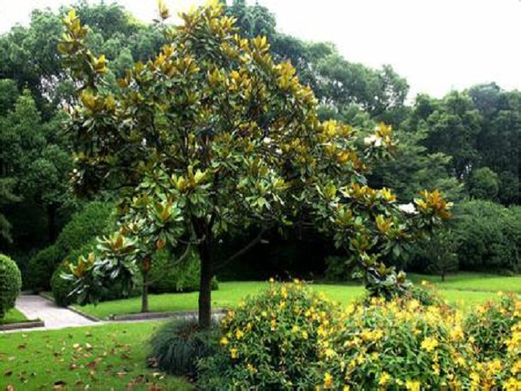
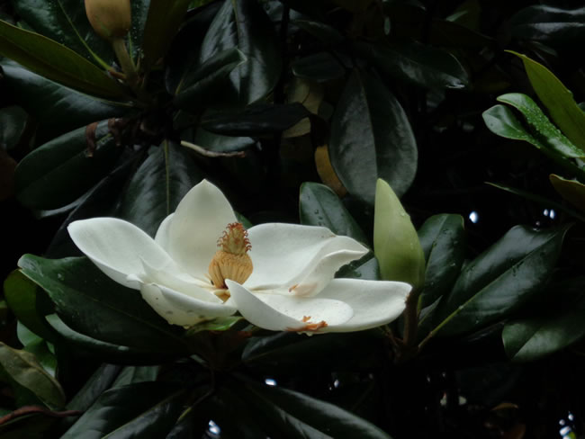

常绿乔木，在原产地高达30米；树皮淡褐色或灰色，薄鳞片状开裂； 小枝粗壮，具横隔的髓心；小枝、芽、叶下面，叶柄、 均密被褐色或灰褐色短绒毛（幼树的叶下面无毛）。 叶厚革质，椭圆形，长圆状椭圆形或倒卵状椭圆形，长10-20厘米， 宽4-7（10）厘米，先端钝或短钝尖，基部楔形，叶面深绿色，有光泽 ；侧脉每边8-10条；叶柄长1.5-4厘米，无托叶痕， 具深沟。花白色，有芳香，直径15-20厘米；花被片9-12，厚肉质，倒卵形， 长6-10厘米，宽5-7厘米；雄蕊长约2厘米，花丝扁平， 紫色，花药内向，药隔伸出成短尖；雌蕊群椭圆体形，密被长绒毛； 心皮卵形，长1-1.5厘米，花柱呈卷曲状。 聚合果圆柱状长圆形或卵圆形，长7-10厘米，径4-5厘米，密被褐色或淡灰黄色绒毛 ；蓇葖背裂，背面圆，顶端外侧具长喙； 种子近卵圆形或卵形，长约14毫米，径约6毫米，外种皮红色，除去外种皮的种子， 顶端延长成短颈。花期5-6月，果期9-10月。
产地分布
广玉兰原产于南美洲，分布在北美洲以及中国大陆的长江流域及以南， 北方如北京、兰州等地。 是江苏省常州市、南通市、连云港市，安徽省合肥市，浙江省余姚市的市树。在长江流域的上海、南京、杭州也比较多见。  